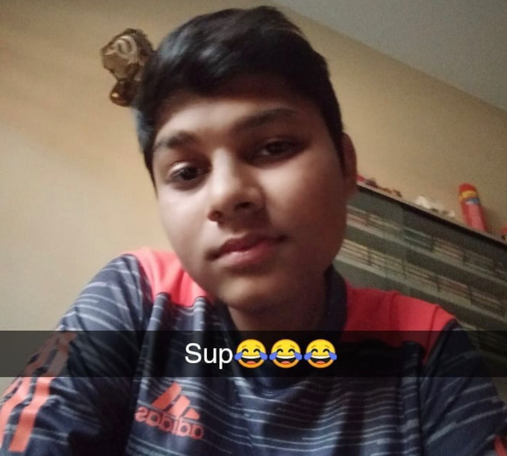
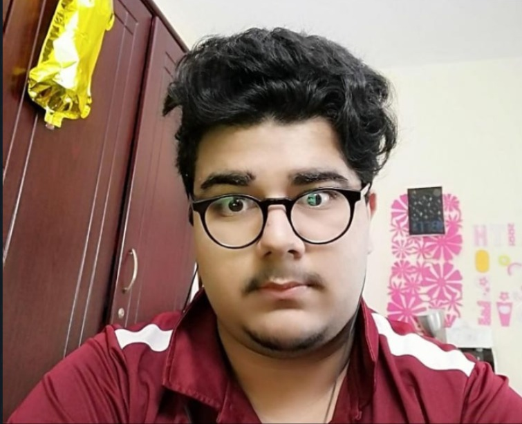

Axe

"Start the game, I don't have time"
Ahmed silat more commanly known as Axe edits, proffesional tryhard never touched grass thinks he's cool but actaully is just gay.
Only good in valorant, beta male all he can do is cry that his carry is not manly like him.
Only knows how to play hard support dazzle otherwise he's just bad.
Tabish's 2nd boyfriend after rayyan,
ahmed is a type of person to tell u to
Garchomp

" ㅤㅤㅤㅤ " - inspired by his father
Ameen Jalali younger brother of Ameer Jalali also known as Carnage. The best out of all of us even its only because the fact he had a 2000 hours head start otherwise Vertical the upcoming star is considered to take over him is a short period of time. He was one of the co-founders of Grim Clan which started during Covid-19 as a CS-GO funny skits channel. Due to his pior expreince in world of war craft and Dota 1 he considered to be the best IGL (in game leader) of all time. People refer to him as irani sometimes as his father is from iran and mother from pakistan that makes him a 100% irani cus science. Anti-mage is considered to be his best hero with a win rate of 90% meaning out 10 games he only loses 1 game a pretty decent win to lose ratio. Dota buff ranks him the 3 best AM player just before his favourite hard carry miracle who currently plays for a washed up Div 2 team called Nigma filled with a bunch of old dudes who should just retire, just like their hair their skills are falling off estimating to not even be in division 2 by next year most likely dropping to div 3.
Man from Ohio

"You can't dull my sparkle ✨" ~ some random DO.
Tabish Memon Khan son of Aijaz Muhammad originally from Ohio, Legend has it PUDGE was designed/inspired after him. Words cannot describe his skills, one of THE BEST players of dota to have ever lived. Legend has it his brother practices his boxing skills on him (while being naked). People are so scared of him when he ques into a game and the enemy see his name they surrender without a heart-beat. He has mastered all 123 heros of dota and he is the one that guides the game developers to bring out new heros and map changes. Without his approval not a single ward can be placed in DOTA. He is one of the top 4 doctors out of the 4 in the world, first place being Rayyan Afzal second place being Hassam while some of his fat is sliding into second place but most of it is in third and fourth place. He also suffers from unrecognizable diesases which are being currently being researched by our top doctor RAYYAN AFZAL, when asked the doctor said,"Idk he is retarted but i like men."
Kanchwala

"Bas Kardo"-Mustafa Shakeel from Mujtabas mic
Mujtaba "Kanchwala" Shakeel commonly known as Vertical is originally from Pakistan. He has the ability of move each of his eyes in different directions according to his own will. Rumors has it that he developed this ability when his mother would enter the room to scold/beat him up. Another one of his abilities is having an in built volume booster. Rumor has it that he developed this ability while living in an environment, very similar to the World War. After almost 3000 hours on Dota 2, his Templar Assassin remains undefeated.
CousinLover

"Sup😂😂😂"
CousinLover also known as Hassam the proffesional booster, he has 98 cousins to boost him out of herald which for some reason all have a problem with our best player TooMuchWaifusSendHelp. This man can only play 2 heros a pudge and shamam, but his PUDGE POS 5 is the best out of all of his roles. He is commonly known for throwing all his ranked games.
xV3Xs

"In my spare time, I love helping young struggling DO's like Tabish Memon Khan"
Muhammad Rayyan Afzal more commonly known as xV3Xs.com is a professional sprinter. Originally from Pakistan, he traveled to the UAE at a very young age to pursue his dream of becoming one of the finest doctors. He is a former member of the SixChinClub and is currently holding the world record for being the fastest runner in the world. He went missing at the age of 17 and returned at the age of 19. When asked about his disappearance, he stated, "Obesity". Legend has it that during his disappearance, he managed several discord mods and maintained a fine number of discord kittens. He is an upcoming talent and a prodigy of the game Dota 2. After landing with Vertical once, Veritcal had this to say, "I'm not playing if he's coming. Dumb N***er. Go kys"